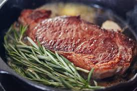
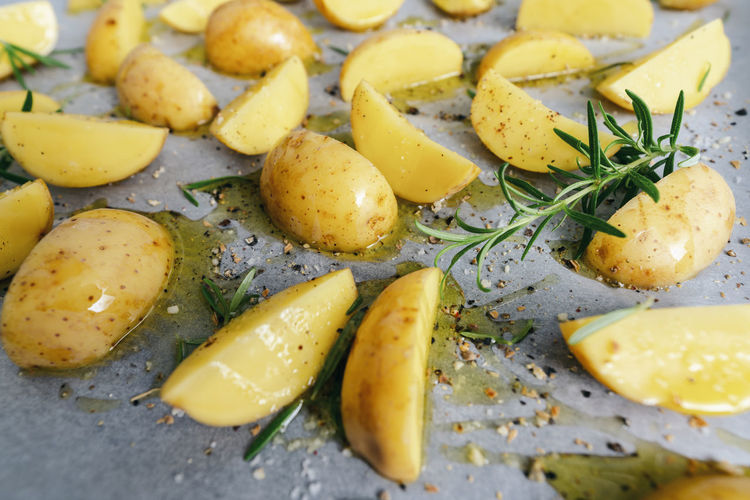
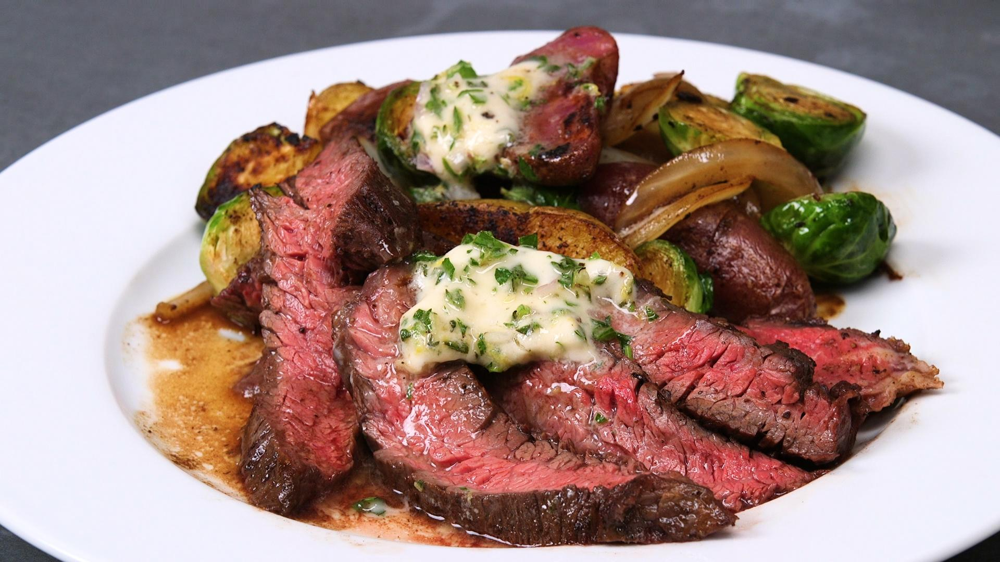

Nutrition
| Calories |
Fat |
Cholesterol |
| 469 |
34g |
107mg |
| Protein |
Sugar |
Potassium |
| 26g |
1g |
789mg |
Prep work:
- Let the steak sit at room tempreture for 30 minutes.
Season the steak generously on each side with salt and pepper.
In a cast-iron skillet with 1 tablespoon of oil over high heat add the steaks to the pan and sear each side 3 mintues or until brown
- Reduce heat to medium low.
Cook the steak to desired taste.
Rare = 125 degrees, medium rare = 135 degrees,
medium = 145, well done = 160
- Right before serving the steak, slether the butter compound on top and let it melt into the tender steak
this adds a great flavor to it
This gives it a nice finishing touch and adds such great flavour
Instructions:
- In a large cast iron skillet over medium high heat, add olive oil and butter, potatoes, garlic, thyme, rosemary and oregano. Cook for about 3 minutes, stir and cook and additional 3 minutes or until fork tender. Remove and set on a plate.
Turn the skillet to high heat. Add the steaks. Cook on each side for 3 minutes or until outside is browned. Reduce heat to medium high. Cook the steaks to desired doneness. Mine took about 10 minutes flipping 3 times to get a medium well.
Right before the steaks are done, make the garlic butter compound. Mix the butter, garlic and fresh chopped herbs. Slather on top of steaks. Add the potatoes back to the pan and heat through and let the butter melt into the steaks.
Ingredients:
- 1 tablespoon olive oil
- 1 tablespoon butter
- 1 pound potatoes sliced about (1/2 inch in thickness)
- 3 garlic cloves minced
- 1 teaspoon thyme chopped
- 1 teaspoon rosemary chopped
- 1 teaspoon oregano chopped
- 2 lean Steak strips
- Salt and pepper
Garlic butter compound:
- 1/4 cup of softened butter
- 3 garlic cloves minced
- 1 teaspoon thyme chopped
- 1 teaspoon rosemary chopped
- 1 teaspoon oregano chopped
This skillet steak is easily the best steak that I have had. Cooked to tender and juicy perfection and the butter garlic herb flavor is unreal! Your family will love this skillet meal.
Enjoy :) ...